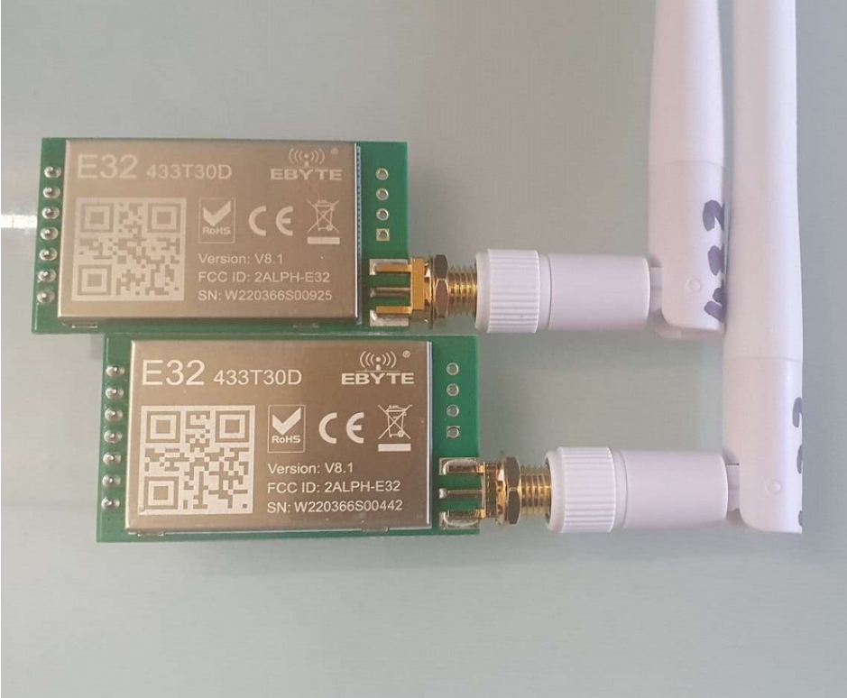
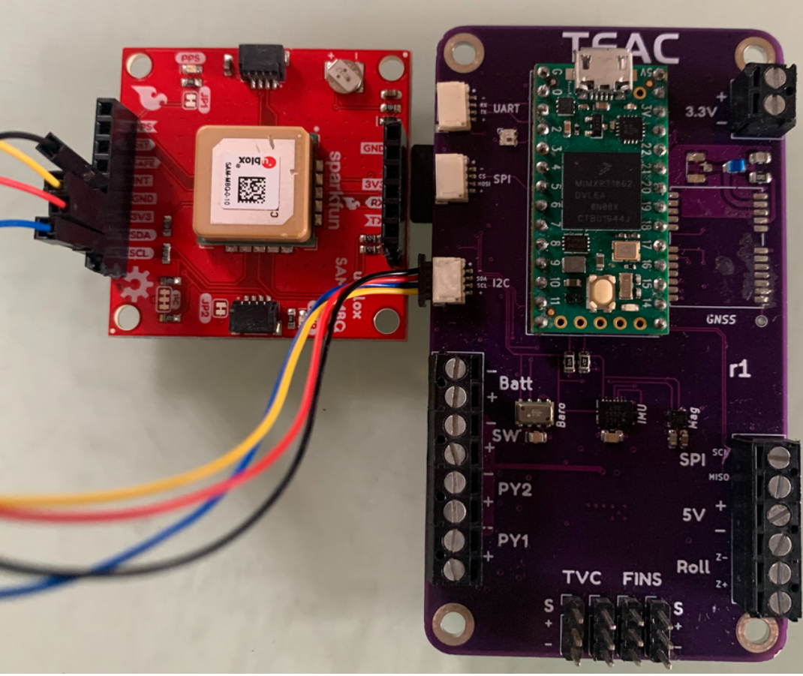
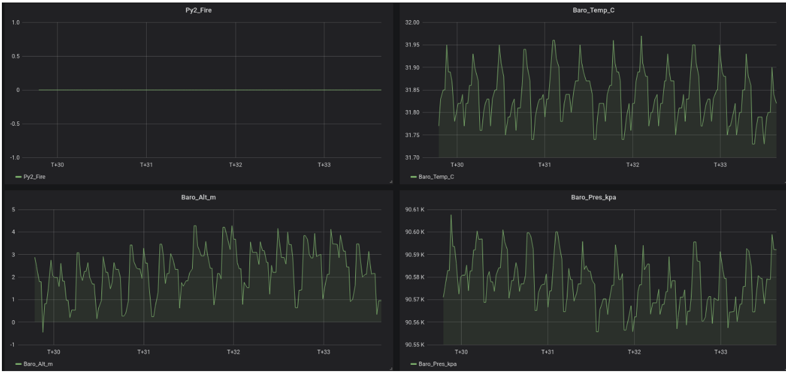
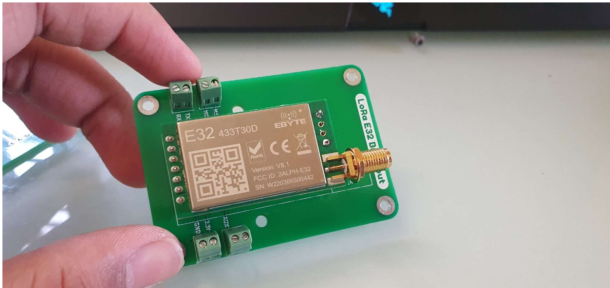
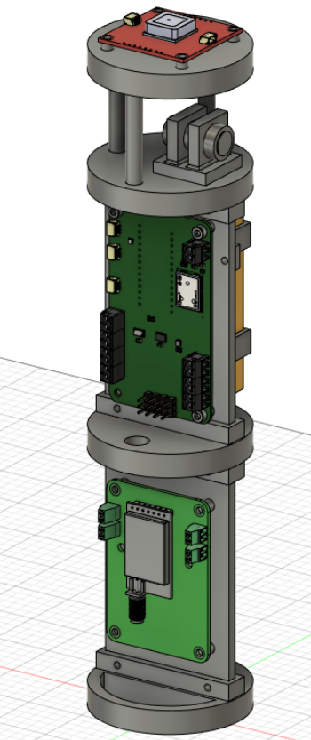
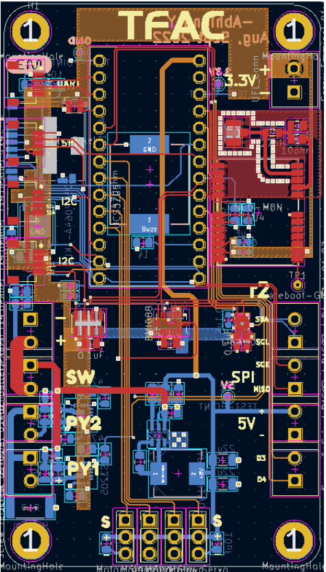

June - August 2022
Dev Log 9
Accomplishments in June 2022
No progress was made in June.
Accomplishments in July 2022
After the lack of progress in June I decided to work on something that wasn’t waiting for rocket parts. I began work on adding two components to the avionics stack which were a Telemetry radio and GNSS. The telemetry radio I chose was an Ebyte E32 LoRa module (fig 1) operating on 433mHz (very powerful), I chose this radio primarily because it was cheaper while being more powerful than the other options I was looking at. As for the GNSS I chose the uBlox SAM-M8Q on a sparkfun board (fig 2), I again chose this because it was cheap compared to other options available and it has a builtin ceramic antenna!


Accomplishments in August 2022
I made a pretty good amount of progress in August. First I began working on code for logging important data from the GNSS but I ran into a bug where the barometer data started going haywire (fig 3). The TL;DR was that I was reading data from the baro at the fastest OSR possible which takes 7-9ms for conversion, so when the GNSS writes new data it changes the read interval, which creates a change in measured pressure, the fix was to reduce the barometer’s OSR and poll it every 10-15ms instead of every loop.
After that I designed a better improved avionics stack with a holder for the GNSS module and telemetry module (fig 4) but most of the new 3D printed parts were not printed right and broke right after printing, so I’ll have to print it again.
Also I made a little breakout board (fig 5) for the Telemetry radio mainly to improve cable management (didn’t really fix that) and to test out the capabilities and quality of PCBs manufactured locally.
Finally I designed TFAC r2 (fig 6), the main improvements include more IO, a functioning onboard GNSS and a much better layout (TFAC r1’s layout was pretty bad in hindsight). I’ve decided not to manufacture it because it doesn’t really make sense, the changes aren’t noteworthy and most of them can be fixed with a bodge.



